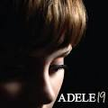
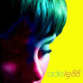
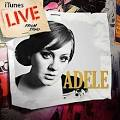
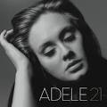

Categorizes
Album List
|  |
1928 Ocak 2008,XL Recordings |
|  |
8817 Aralık 2008 |
|  |
iTunes Live from SoHo3 Şubat 2009,XL Recordings |
|  |
2124 Ocak 2011,XL Recordings |
iTunes Festival:London 201113 Temmuz 2011 |
|
2520 Kasım 2015 |
Career
2006–2010: Beginnings and 19
Four months after graduation, she published two songs on the fourth issue of the online arts publication PlatformsMagazine.com. She had recorded a three-song demo for a class project and given it to a friend. The friend posted the demo on Myspace, where it became very successful and led to a phone call from Richard Russell, boss of the music label XL Recordings. She doubted if the offer was real because the only record company she knew was Virgin Records, and she took a friend with her to the meeting. Nick Huggett, at XL, recommended Adele to manager Jonathan Dickins at September Management, and in June 2006, Dickins became her official representative. September was managing Jamie T at the time and this proved a major draw for Adele, a big fan of the British singer-songwriter. Huggett then signed Adele to XL in September 2006. Adele provided vocals for Jack Peñate's song, "My Yvonne," for his debut album, and it was during this session she first met producer Jim Abbiss, who would go on to produce both the majority of her debut album, 19, and tracks on 21.
In June 2007, Adele made her television debut, performing "Daydreamer" on the BBC's Later... with Jools Holland.Adele's breakthrough song, "Hometown Glory", was released in October 2007.
By 2008, Adele had become the headliner and performed an acoustic set, in which she was supported by Damien Rice.She became the first recipient of the Brit Awards Critics' Choice and was named the number-one predicted breakthrough act of 2008 in an annual BBC poll of music critics, Sound of 2008. The album 19, named for her age at the time she wrote and composed many of its songs, entered the British charts at number one. The Times Encyclopedia of Modern Music named 19 an "essential" blue-eyed soul recording. She released her second single, "Chasing Pavements", on 14 January 2008, two weeks ahead of her debut album, 19. The song reached number two on the UK Chart, and stayed there for four weeks. Adele was nominated for a 2008 Mercury Prize award for 19.She also won an Urban Music Award for "Best Jazz Act." She also received a Q Awards nomination in the category of Breakthrough Act and a Music of Black Origin nomination in the category of Best UK Female. In March 2008, Adele signed a deal with Columbia Records and XL Recordings for her foray into the United States. She embarked on a short North American tour in the same month, and 19 was released in the US in June.
Billboard magazine stated of it: "Adele truly has potential to become among the most respected and inspiring international artists of her generation."
The An Evening with Adele world tour began in May 2008 and ended in June 2009. She later cancelled the 2008 US tour dates to be with a former boyfriend. She said in Nylon magazine in June 2009, "I'm like, 'I can't believe I did that.' It seems so ungrateful.... I was drinking far too much and that was kind of the basis of my relationship with this boy. I couldn't bear to be without him, so I was like, 'Well, I'll just cancel my stuff then.'" She referred to this period as her "early life crisis". She is also known for her dislike of flying and bouts of homesickness when away from her native London. By the middle of October 2008, Adele's attempt to break in America appeared to have failed. But then she was booked as the musical guest on the 18 October 2008 episode of NBC's Saturday Night Live. The episode, which included an expected appearance by then US vice-presidential candidate Sarah Palin, earned the program its best ratings in 14 years with 17 million viewers. Adele performed "Chasing Pavements" and "Cold Shoulder," and the following day, 19 topped the iTunes charts and ranked at number five at Amazon.com while "Chasing Pavements" rose into the top 25. The album reached number 11 on the Billboard 200 as a result, a jump of 35 places over the previous week. In November 2008 Adele moved to Notting Hill, London after leaving her mother's house, a move that prompted her to give up drinking. The album was certified gold in February 2009 by the RIAA. By July 2009, the album had sold 2.2 million copies worldwide.
2011–2014: 21, Worldwide Recognition and Hiatu
Adele released her second studio album, 21, on 24 January 2011 in the UK and 22 February in the US.She said that the album was inspired by the break-up with her former partner.The album's sound is described as classic and contemporary country and roots music. The change in sound from her first album was the result of her bus driver playing contemporary music from Nashville when she was touring the American South, and the title reflected the growth she had experienced in the prior two years. Adele told Spin Magazine: "It was really exciting for me because I never grew up around [that music]." 21 hit number 1 in more than 26 countries, including the UK and the US.
In October 2012, Adele confirmed that she had been writing, composing and recording the theme song for Skyfall, the twenty-third James Bond film.The song "Skyfall," written and composed in collaboration with producer Paul Epworth, was recorded at Abbey Road Studios, and features orchestrations by J. A. C. Redford.Adele stated recording "Skyfall" was "one of the proudest moments of my life." On 14 October, "Skyfall" rose to number 2 on the UK Singles Chart with sales of 92,000 copies bringing its overall sales to 176,000, and "Skyfall" entered the Billboard Hot 100 at number 8, selling 261,000 copies in the US in its first three days.This tied "Skyfall" with Duran Duran's "A View to a Kill" as the highest-charting James Bond theme song on the UK Singles Chart;a record surpassed in 2015 by Sam Smith's "Writing's on the Wall".
In September 2013, Wiz Khalifa confirmed that he and Adele had collaborated on a song for his upcoming fifth studio album, Blacc Hollywood, though the collaboration did not make the final track listing.In January 2014, Adele received her tenth Grammy Award with "Skyfall" winning Best Song Written for Visual Media at the 56th Annual Grammy Awards.On the eve of her 26th birthday in May 2014, Adele posted a cryptic message via her Twitter account which prompted media discussion about her next album. The message, "Bye bye 25... See you again later in the year," was interpreted by some in the media, including the Daily Mail and Capital FM, as meaning that her next album would be titled 25 and released later in the year. In 2014, Adele was nominated for nine World Music Awards. In early August, Paul Moss suggested that an album would be released in 2014 or 2015. However, in the October 2014 accounts filed with Companies House by XL Recordings, they ruled out a 2014 release.
2015–present: 25 and Adele Live 2016
"My last record was a break-up record, and if I had to label this one, I would call it a make-up record. Making up for lost time. Making up for everything I ever did and never did. 25 is about getting to know who I've become without realising. And I'm sorry it took so long but, you know, life happened."
On 27 August 2015, Billboard reported that Adele's label, XL Recordings, had intentions of releasing her third studio album sometime in November 2015.Danger Mouse has contributed a song, while Tobias Jesso Jr. has written a track, and Ryan Tedder is "back in the mix after producing and co-writing "Rumour Has It" on 21." At the 72nd Venice International Film Festival in early September 2015, Sia announced that her new single "Alive" was co-written by Adele, and had originally been intended for Adele's third album. On 18 October, a 30-second clip of new material from Adele was shown on UK television during a commercial break on The X Factor. The commercial teases a snippet from a new song from her third album, with viewers hearing a voice singing accompanied by lyrics on a black screen.
In a statement released three days later she confirmed that the album is titled 25, with Adele stating, "My last record was a break-up record, and if I had to label this one, I would call it a make-up record. Making up for lost time. Making up for everything I ever did and never did. 25 is about getting to know who I've become without realising. And I'm sorry it took so long but, you know, life happened." Adele also believes 25 will be her last album with her age as its title, believing that 25 would be the end to a trilogy. On 22 October, Adele confirmed that 25 would be released on 20 November, while the lead single from the album, "Hello" would be released on 23 October.The song was first played on Nick Grimshaw's Radio 1 Breakfast Show on the BBC on the morning of 23 October with Adele interviewed live. The video of "Hello", released on 22 October, was viewed over 27.7 million times on YouTube in its first 24 hours, breaking the Vevo record for the most views in a day.By the end of 2015, it had sold 12.3 million units globally and was the year's 7th best-selling single despite being released in late October.
SOURCE:https://www.0wikipedia.org/index.php?q=aHR0cHM6Ly90ci53aWtpcGVkaWEub3JnL3dpa2kvQWRlbGU